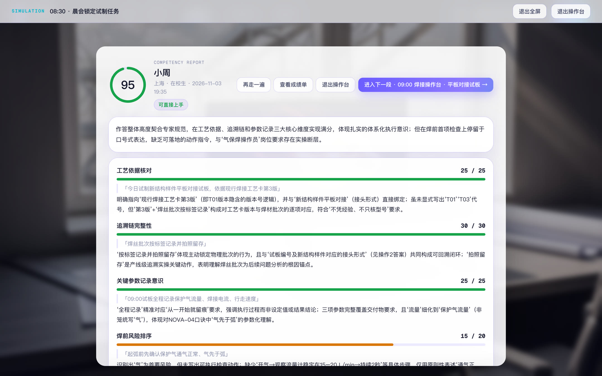
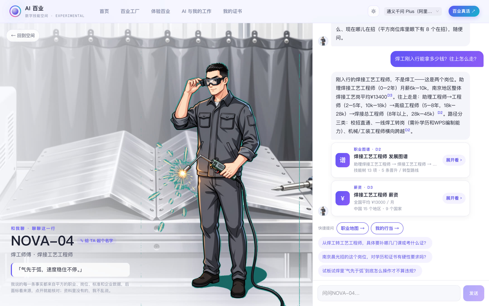
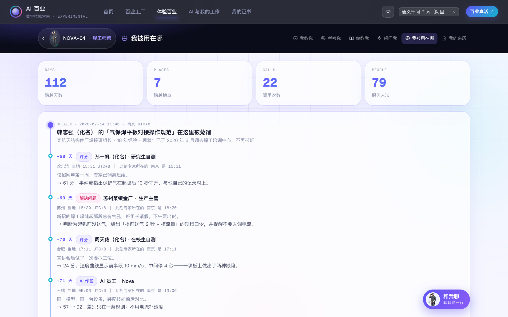
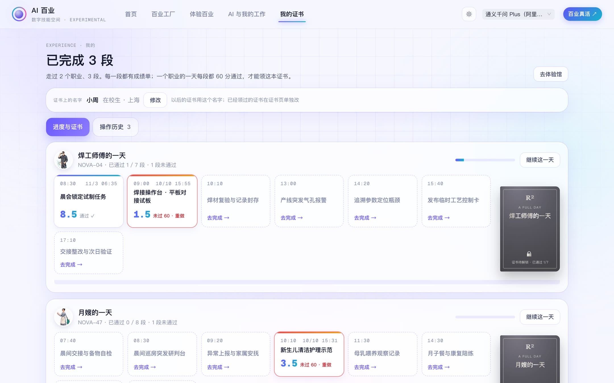
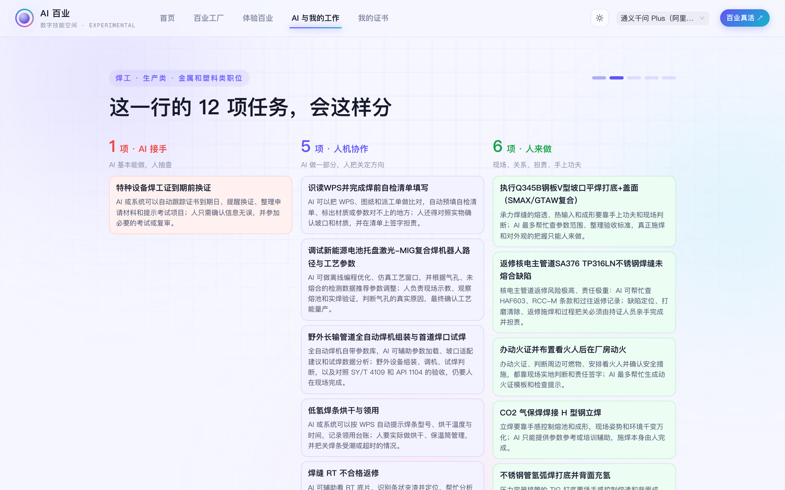
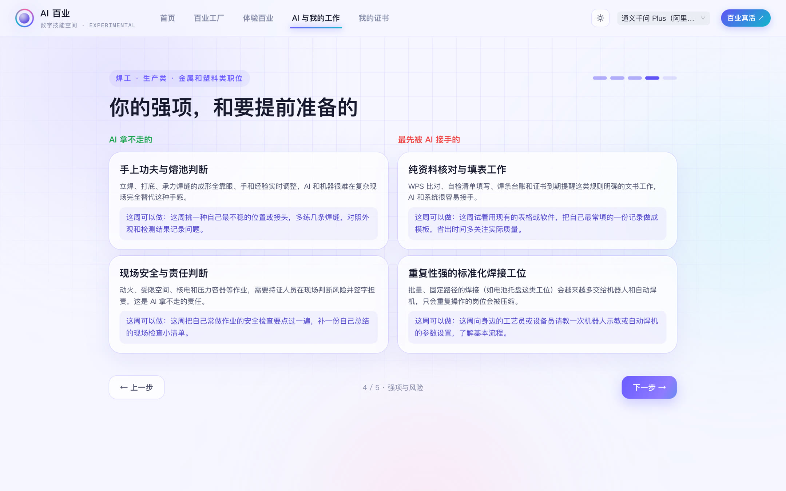

AI 百业怎么玩
走进一个职业的一天、跟数字职人学和聊、拿证书、看 AI 会怎么改变你的工作。一份手册讲一件事，每步一张真实截图，框出来的地方就是要点；最后一份是常见问题。
11 个模块
找一个职业，走进它的一天
顶部「体验百业」里是所有职业的一天。挑一个点进去，先到这位数字职人的主页：它是谁、学自哪位老师傅；下面一排是各种玩法，从「考考你」开始就是走它的一天。
找一个职业，走进它的一天
顶部「体验百业」里是所有职业的一天。挑一个点进去，先到这位数字职人的主页：它是谁、学自哪位老师傅；下面一排是各种玩法，从「考考你」开始就是走它的一天。
1搜一个职业，或按行业挑
可以搜职业、企业、城市。每张卡是一个职业的一天：几段、几点到几点，有没有虚拟工位、沉浸场景。
- 1职业岗位体验 / 学科研究体验
- 2搜职业、企业、城市，比如「焊」
- 3一张卡 = 一个职业的一天
- 4开始体验
2想体验科研：切到「学科研究体验」
跟着博士后、实验员做一回科研：读数据、做实验、组会汇报。
- 1学科研究体验
- 2研究方向的一天：电池材料、细胞培养……
3空间主页：它是谁，怎么玩
右边是这位数字职人：学自哪位老师傅、多少人考过；下面一排是玩法，每个模块都有单独的手册。有 3D 场景的职业，名字旁边还会多一个「3D BETA」按钮。

- 1它是谁：学自哪位老师傅、多少人考过
- 2玩法：和我聊、我教你、考考你、你教我、问问我……
4一天总览：几点做什么
点「考考你」先到这一页：左边一天分几段，红色是突发；点一段看情境、会遇到谁，再点「进入操作台」开始。
- 1一天分几段，红色的是突发
- 2这一段的情境
- 3进入操作台
考考你：自己走一段，拿成绩单
每段像一小场戏：有情境、有人跟你说话，你来做判断、写记录。走完马上出成绩单，逐项打分，还会引用你写的原话。每段 60 分算过。
考考你：自己走一段，拿成绩单
每段像一小场戏：有情境、有人跟你说话，你来做判断、写记录。走完马上出成绩单，逐项打分，还会引用你写的原话。每段 60 分算过。
写记录的那一步，可以这样写
- 「「今天试制新结构样件平板对接试板，依据现行焊接工艺卡第 3 版；焊丝批次按标签记录并拍照；起弧前先确认保护气通气正常。」」
- 「「F1 浑浊、有细丝，判断污染，已经灭活封袋、擦净安全柜；F2、F3 镜下正常，先暂停共用的那瓶培养基。」」
写成交接给同事看的样子：做了什么、看到了什么、依据是什么、下一步干什么。空话（「注意安全」）不得分。
1先看这一段的情境
在哪、几点、会遇到谁、要用到哪些东西。看完点「开始这一段」。
- 1这一段：在哪、遇到谁、要干什么
- 2开始这一段
2剧情对话，点一下往下走
有人跟你交代事情、提醒你注意什么。这些话里常藏着后面要用的信息，别跳太快。
- 1谁在说话、说了什么；点一下继续
3做判断：选、多选、分类、排优先级
按你的判断来，没有标准答案提示。有的题能多选，有的要拖分值、排先后。
- 1题目和选项
- 2选好点「下一步」
4走完出成绩单
这一段的分数、逐项打分和理由。没过 60 分可以「再走一遍」；过了就「进入下一段」。一天每段都过了，才能领证书。

- 1这一段的分数
- 2进入下一段
- 3再走一遍 / 查看成绩单
- 4逐项打分，引你写的原话
我教你：看它先做一遍，再比着做
没把握就先选「我教你」：每一步它先讲要看什么、为什么，遇到操作台它先完整做一遍给你看，再换你比着做。这里不算分，放心试。
我教你：看它先做一遍，再比着做
没把握就先选「我教你」：每一步它先讲要看什么、为什么，遇到操作台它先完整做一遍给你看，再换你比着做。这里不算分，放心试。
1在主页点「我教你」
和「考考你」是同一天、同样的段落，只是每一步多了讲解和示范。
- 1我教你
2到操作台：先听它讲
右边是它的讲解和这一段的目标；下面是操作区：开关、旋钮、拖着焊枪沿焊缝走。电脑有摄像头的话，也可以用手握「焊枪」。

- 1它先讲：看什么、为什么
- 2先看我做一遍
- 3这一段的目标
- 4操作区
- 5用摄像头握焊枪
3看它做一遍
它边做边讲：每一下是为什么，依据是哪位老师傅的经验。仪表、目标、事件记录跟着实时变化。

- 1这一下在做什么、依据哪位老师傅
- 2目标做到一项亮一项
- 3每个动作都记下来
- 4演示中，点一下停
4做完看总结，再换你
目标全亮了，它会总结这一遍的关键参数。点「换你比着做」，它一下一下带你做。

- 1这一遍的总结
- 2换你比着做
- 36 个目标全过
和我聊：问数字职人这一行
想知道这一行挣多少、怎么入行、往上怎么走，直接问它。它说的每句话都带来源，点开能看到出自平方的哪份资料；资料里没有的，它会说没有，不编。
和我聊：问数字职人这一行
想知道这一行挣多少、怎么入行、往上怎么走，直接问它。它说的每句话都带来源，点开能看到出自平方的哪份资料；资料里没有的，它会说没有，不编。
可以这样问
- 「「刚入行能拿多少钱？往上怎么走？」」
- 「「我是机械专业的，转焊接工艺要补哪些证？」」
- 「「现在哪些公司在招，在哪些城市？」」
- 「「你说的『气先于弧』到底怎么操作才算不违规？」」
可以给它起个名字（只有你自己看得到）。问得越具体，答得越具体。
1在主页点「和我聊」
空间里任何一页的右下角也有「和我聊」按钮。
- 1和我聊
2问它，看出处
回答里的小角标就是来源，下面的卡片能展开看原始资料；右边还有几个顺着往下问的建议。

- 1你的问题
- 2回答，小角标是来源
- 3来源卡：职业图谱、薪资……
- 4快捷提问、顺着问
- 5它是谁，可以给它起名字
问问我：把手头的真问题交给它
工作里遇到的真实问题，写下来交给它。它按这一行老师傅的做法给出现场能照做的办法，并说明是根据什么判断的。别人问过的问题和它的回答，右边可以参考。
问问我：把手头的真问题交给它
工作里遇到的真实问题，写下来交给它。它按这一行老师傅的做法给出现场能照做的办法，并说明是根据什么判断的。别人问过的问题和它的回答，右边可以参考。
可以这样写
- 「「新招的焊工焊的角焊缝，每一道起头 2–3 厘米都有一串小孔，后面就正常。要不要把电流调小一点？」」
- 「「客户说我们的报价单看不懂，怎么改得让人一眼看明白？」」
写清楚：你是谁、在哪、遇到了什么现象、你已经试过什么。
1写下问题，交给它
「你是谁」「你在哪」选填，帮它判断场景；问题越具体越好。

- 1写下你遇到的问题
- 2交给 AI 核心
- 3别人问过的问题和回答
它从哪来：来历、被用在哪
每位数字职人都有出处：照着哪份真实岗位 JD 搭的、学自哪位老师傅、被谁用过。「你教我」是给老师傅的：老师傅亲手示范一遍，它就照着学。
它从哪来：来历、被用在哪
每位数字职人都有出处：照着哪份真实岗位 JD 搭的、学自哪位老师傅、被谁用过。「你教我」是给老师傅的：老师傅亲手示范一遍，它就照着学。
1我的来历：照着哪份 JD 搭的
左边是真实的岗位 JD 原文和链接；右边是每条职责拆成了这个空间里的哪一段练习。
- 1岗位 JD 原文和链接
- 2每条职责拆成哪一段练习
2我被用在哪：每一次调用都记账
多少天、多少地方、多少人用过；下面是一条条记录：谁在哪儿用、得了多少分、解决了什么问题。

- 1跨越天数、地点、调用、服务人次
- 2每一次使用的记录
3D 场景：走进它工作的地方
部分职业有 3D 场景（BETA），入口在空间主页名字旁边的「走进 XX · 3D BETA」。目前有：手术室、咖啡吧台、婴儿房、数据分析工位、火箭总装厂房、应急指挥大厅、手套箱间、珊瑚礁。
3D 场景：走进它工作的地方
部分职业有 3D 场景（BETA），入口在空间主页名字旁边的「走进 XX · 3D BETA」。目前有：手术室、咖啡吧台、婴儿房、数据分析工位、火箭总装厂房、应急指挥大厅、手套箱间、珊瑚礁。
1在空间主页点「3D BETA」
以火箭总装工程师为例，入口在名字下面那一行。没有这个按钮的职业，暂时还没有 3D 场景。
- 1走进总装厂房 · 发动机段 · 3D BETA
2拖动、滚轮看四周
鼠标拖动转视角，滚轮前后走；点场景里的标签，看这样东西是干什么的。也可以打开摄像头，用头的转动来看。建议用电脑浏览器，第一次打开要等一会儿。
- 13D BETA
我的证书：每段的成绩和证书
「我的证书」里是你走过的每一段和分数。一个职业的一天每段都过了 60 分，就能领这个职业的体验证书，由平方创想和方略研究院签发，带编号。
我的证书：每段的成绩和证书
「我的证书」里是你走过的每一段和分数。一个职业的一天每段都过了 60 分，就能领这个职业的体验证书，由平方创想和方略研究院签发，带编号。
1先把证书上的名字改好
每个职业一行，每段一格：过了的显示分数，没过的点「重做」。右边是这个职业的证书，全过才解锁。

- 1证书上的名字，先改好
- 2每段的分数，没过的点「重做」
- 3证书：全过才解锁
- 4去体验馆接着走
2领到的证书
写着你的名字、走完的是哪个职业的一天、每段的分数和综合等级。可以复制链接发给别人，也能打印或存 PDF。
- 1你的名字、每段分数、综合等级
- 2复制链接、打印 / 存 PDF
AI 与我的工作：看 AI 会怎么改变你这一行
写下你的职位（贴一段 JD 或简历也行），它对着平方职业库，把这一行的工作拆成一项项任务：哪些 AI 会接手、哪些人机协作、哪些还得人来做，再告诉你这周可以做点什么。简历只用来分析这一次，不会保存。
AI 与我的工作：看 AI 会怎么改变你这一行
写下你的职位（贴一段 JD 或简历也行），它对着平方职业库，把这一行的工作拆成一项项任务：哪些 AI 会接手、哪些人机协作、哪些还得人来做，再告诉你这周可以做点什么。简历只用来分析这一次，不会保存。
可以这样写
- 「「焊工」」
- 「「我在一家咨询公司做数据分析，三年，主要做客户的销售数据看板」」
- 「直接贴一段招聘 JD 或你的简历」
写职位名最快；贴了简历，结果会按你的经历加减分。
1写下你的职位
顶部「AI 与我的工作」。写职位名，或贴 JD、简历，点「开始」。下面几个是例子，点一下就填好。
- 1职位、JD 或简历
- 2试试这几个
2先看这一行的 AI 替代性
它会先确认最像的职业，然后给一个分数：这一行的工作 AI 能接手多少。分数越高，越该早做准备。
- 1AI 替代性分数
- 2下一步
3这一行的任务分三类
每项任务写清楚 AI 做什么、人做什么。

- 1AI 接手 / 人机协作 / 人来做
4你的强项，和要提前准备的
左边是 AI 拿不走的本事，右边是最先被 AI 接手的部分；每条都给了一件这周就能做的事。

- 1AI 拿不走的
- 2最先被 AI 接手的
百业工厂：用一份 JD 生成一个职业空间
想要的职业还没有？在「百业工厂」用一份真实岗位 JD 生成一个新空间：AI 读 JD，搭出技能树、故事线、虚拟工位和场景美术。也可以只给一个职业名。
百业工厂：用一份 JD 生成一个职业空间
想要的职业还没有？在「百业工厂」用一份真实岗位 JD 生成一个新空间：AI 读 JD，搭出技能树、故事线、虚拟工位和场景美术。也可以只给一个职业名。
可以这样开始
- 「从岗位库里搜「华为 软件」「比亚迪 工艺」，挑一份 JD」
- 「岗位库里没有，就把招聘页上的职责和要求整段贴进来」
- 「只想要一个职业：点「新职业」，写「锅炉工」「育婴师」」
生成好的空间先是草稿，看一遍再给别人用。
1在「百业工厂」选怎么建
顶部「百业工厂」。三种：从一份 JD 建、只给一个职业名、去素材库管人物 / 场景 / 道具。也可以先用一句话说你的问题，它帮你找合适的数字职人。
- 1新岗位 / 新职业 / 素材库
- 2一句话说问题，帮你找职人
2挑一份 JD，或者贴一份
从岗位库挑一条，或者粘贴一份新的 JD（正文至少 40 字），点「用这份 JD 构建空间」。
- 1从岗位库挑一份 JD
- 2或者粘贴一份新 JD
- 3约 2–4 分钟生成
常见问题
用的时候最常被问到的问题。页面报错、打不开，截图并附上网址，发给对接你的人。
常见问题
用的时候最常被问到的问题。页面报错、打不开，截图并附上网址，发给对接你的人。
首页谁都能看；点进一个职业去体验要登录，用发给你的账号。管理员新建或重置过密码的账号，第一次登录会先让你换一个自己的密码。
建议用电脑上的 Chrome 或 Edge 浏览器。手机能看、能答选择题，但操作台要拖动、3D 场景要显卡，手机上不好用。
它决定数字职人回答你、批改你写的内容用哪个 AI。没有特别需要就用默认的「通义千问 Plus」，国内访问最稳。
右上角的太阳按钮切换深浅色。投影、一体机上用浅色更清楚。
每段走完都有成绩单，按这一行老师傅的标准逐项打分，并引用你写的原话。每段 60 分算过（证书和「我的证书」里换算成 10 分制显示）。没过可以「再走一遍」，或在「我的证书」里点「重做」。
一个职业的一天每段都过了，就能领这个职业的体验证书，由平方创想和方略研究院签发，带编号。可以复制链接给别人看，也能打印或存 PDF。证书上的名字在「我的证书」页最上面改。
是同一天、同样的段落。「我教你」每一步有讲解，操作台它先做一遍给你看，不算分；「考考你」自己做、出成绩单、算进证书。
「和我聊」每句话都带来源，点开能看到出自平方的哪份资料（职业库、岗位、行业标准、企业）。资料里没有的它会直接说没有；去网上查的会说明是网上的。
3D 是 BETA，只有部分职业有。第一次打开要等半分钟左右，电脑显卡越好越顺。打不开不影响其他玩法。
能。焊工这类操作台有「用摄像头握焊枪」按钮，浏览器问要不要摄像头权限时点允许。画面只在你自己的电脑上用来识别手的位置。
有账号的机构用户可以在「百业工厂」用一份 JD 自己生成；没有账号，告诉对接你的人想要哪个职业。
截图、附上网址，说明当时点了什么，发给对接你的人。